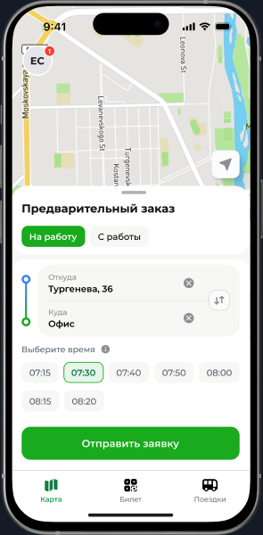
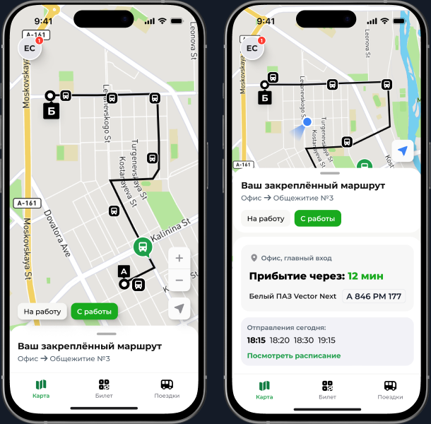
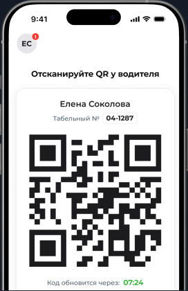
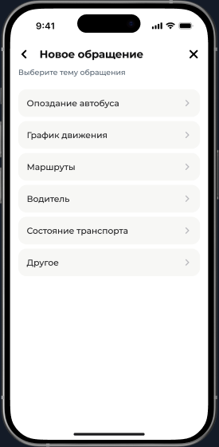
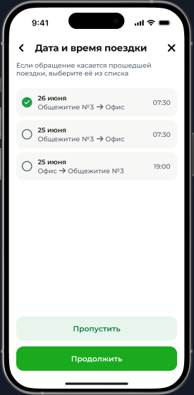
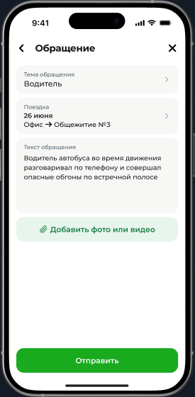

Сервис заказа корпоративного транспорта
Один интерфейс для сотрудников с постоянным, сменным и гибридным графиком.

Один интерфейс для двух режимов работы
Компании нужно перевозить сотрудников до офисов, куда неудобно добираться общественным транспортом. Но у сотрудников разные графики: часть работает по фиксированному расписанию, часть — сменами, гибридно или нерегулярно.
Два сценария как один путь
Персональный предзаказ нужен для сменных и гибридных графиков. Закреплённый автобус — для регулярных поездок без ежедневных действий. При переходе на постоянный маршрут пользователь не переучивается.
Связность сценариев и качество данных
Спроектировала заказ транспорта, QR-билет, историю поездок, профиль и обращения. Мои решения — общая логика двух сценариев, иерархия экрана закреплённого маршрута и структурированные обращения вместо свободного текста.
Предзаказ для нерегулярных поездок
Сменные и гибридные графики, разовые поездки и работа в нетиповое время не укладываются в постоянный маршрут. Предзаказ позволяет выбрать направление, дату и время подачи транспорта.
Поездка только на нужные дни
Гипотеза
Если сотрудник может выбирать направление и время для каждой поездки, люди с нерегулярным графиком смогут пользоваться корпоративным транспортом без закрепления за постоянным маршрутом, а бизнес увидит фактический нерегулярный спрос.
Решение: предзаказ позволяет сотруднику заказывать транспорт только на нужные дни и время, а бизнесу — видеть нерегулярный спрос и назначать транспорт по фактической потребности.

Моё решение
Маршрут без ежедневного заказа
Сотрудники с постоянным графиком закрепляются за маршрутом с регулярными рейсами. Транспорт назначается автоматически, ежедневные действия не требуются.
Сначала — время прибытия
Гипотеза
Если на главном экране закреплённого маршрута показать время прибытия как главную информацию, а карту, расписание и данные автобуса оставить доступными по запросу, сотрудник сможет понять, когда выходить к остановке, без ежедневного оформления одной и той же поездки.

Моё решение
Билет в приложении, контроль при посадке
Водитель сканирует QR-код при входе. Код привязан к учётной записи и автоматически обновляется.
Динамический QR вместо передаваемого пропуска
Гипотеза
Если QR-код привязан к учётной записи и обновляется автоматически, сотрудник сможет подтвердить право на поездку в приложении, а пересланный скриншот к моменту посадки станет недействительным.

Почему код обновляется
Без привязки и обновления QR превращается в передаваемый пропуск. Автоматическое обновление делает пересланный скриншот недействительным и связывает посадку с конкретной учётной записью.
Результат механики: водитель проверяет доступ при посадке, а система автоматически фиксирует, кто, когда и каким рейсом воспользовался.
Обращения с контекстом поездки
Данные вместо свободного текста
Гипотеза
Если пользователь выбирает тему и поездку из готовых вариантов, а не описывает весь контекст вручную, диспетчер получит обращение, готовое к обработке, а продукт сможет использовать категории для анализа качества маршрутов и работы перевозчиков.
Моё решение
Проектировала не просто форму, а качество данных на выходе: поездка из истории вместо текстового описания, типы обращений вместо общей темы и фото как доказательство.

Выбор темыКатегория вместо общей жалобы

Выбор поездкиКонтекст из истории

Форма обращенияТекст и подтверждающие материалы